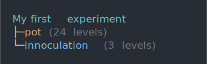
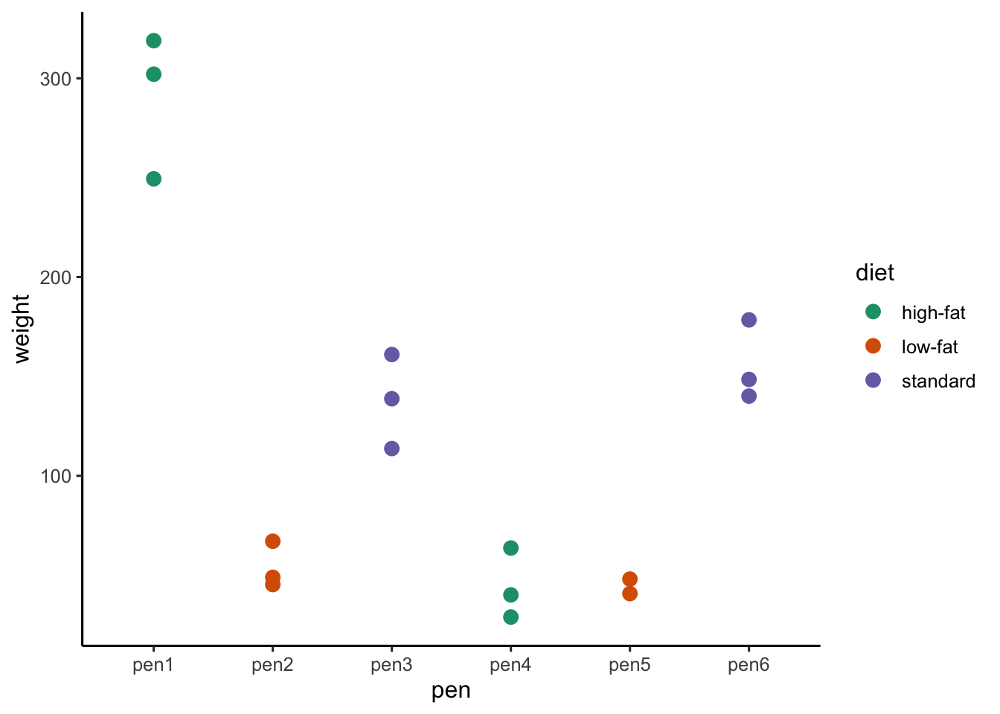

Chapter 3 Getting started
The experimental planning in this book is supported by the edibble R-package and its extensions. The edibble system is built on the principle that the system must make it easy to recover experimental context by encouraging the user to be explicit about experimental details. To get started with using the system, you need to first load the package:
library(edibble)3.1 Setting the experimental structure and context
In the edibble system, an experiment design is built step-by-step. In the first step, you start with initialising the design by using the start_design() where the user can supply an optional title of the experiment. All subsequent steps are best specified after using the pipe operator (%>%) re-exported from the magrittr package or the native pipe operator (|>) available from R version 4.1 onwards. For example, below we carry out the following steps:
- initiate an experiment called “My first experiment” via
start_design(); - set 24 pots with
set_units(); and then - set treatments with 3 levels: 2 bacterial strains (PM398 and ZNP1) and no innoculation with
set_trts().
mydesign1 <- start_design("My first experiment") %>%
set_units(pot = 24) %>%
set_trts(innoculation = c("PM398", "ZNP1", "none"))These steps create and modify a so-called “edibble design” (edbl_design) object that is used to represent an intermediate construct of an experimental design. The arguments in the functions set_units() and set_trts() employ the convention that the left hand side (LHS) is the name of the factor and the input on the right hand side (RHS) defines the levels. If the RHS is a single integer then it’s assumed to be the number of levels and if it’s a vector then it’s the name of the levels.
The print out of this object, as seen below, is displayed like a tree summarising the variables defined thus far.
mydesign1## My first experiment
## ├─pot (24 levels)
## └─innoculation (3 levels)If you view the print out in the terminal or console, you will actually see that text are color coded so it’s easier to distinguish between the type of variables (e.g. unit or treatment). The above print out in a terminal will be viewed like below. These colors are customisable as discussed in Section 3.4.

The argument names in set_units and set_trts are not fixed, so you could easily change the name of the units or treatment to something more meaningful. Below we have another experiment which has a statistically equivalent experimental structure as the previous experiment (24 units and 3 levels of treatment), but it “reads” as a different experimental context – a typical user will realise that the experimental units are pigs and treatments are diet.
mydesign2 <- start_design("My second experiment") %>%
set_units(pig = 24) %>%
set_trts(diet = c("high-fat", "low-fat", "standard"))
mydesign2## My second experiment
## ├─pig (24 levels)
## └─diet (3 levels)You can define more than one unit factor or treatment factor. For example below, it reads as that there are: 3 pens (named “North”, “Shade” and “Meadow”), 18 pigs, 3 type of diets and 2 types of supplement given at a frequency of either daily or weekly.
start_design("My experiment with multiple factors") %>%
set_units(pen = c("North", "Shade", "Meadow"),
pig = 18) %>%
set_trts(diet = c("high-fat", "low-fat", "standard"),
supplement = 2,
# frequency of supplements:
frequency = c("daily", "weekly"))## My experiment with multiple factors
## ├─pen (3 levels)
## ├─pig (18 levels)
## ├─diet (3 levels)
## ├─supplement (2 levels)
## └─frequency (2 levels)3.1.1 A viable experimental design
3.1.2 Understanding the experimental context
3.1.3 Fitting a variety of mental mode
3.2 Mapping treatment to units
The above code creates an object that represents an intermediate construct of an experimental design. To complete the specification of a minimum experimental design, we still need to specify:
- the mapping of the treatments to units, which is achieved using
allot_trts(), and - how the treatments are actually allocated to units via
assign_trts().
These step may feel redundant in experiments where there is exactly one unit factor and one treatment factor but it’s required for further generalisation to other experimental structures. In addition, it serves to re-enforce the specific actions to the user.
des <- start_design("My first animal experiment") %>%
set_units(pig = 24) %>%
set_trts(diet = c("high-fat", "low-fat", "standard")) %>%
allot_trts(diet ~ pig) %>%
assign_trts(order = "random", seed = 1) Once a minimum viable experimental design has been specified, then you can generate the experimental design table (or tibble) called edibble by parsing the object to serve_table().
serve_table(des)## # My first animal experiment
## # An edibble: 24 x 2
## pig diet
## <unit(24)> <trt(3)>
## 1 pig1 high-fat
## 2 pig2 low-fat
## 3 pig3 low-fat
## 4 pig4 low-fat
## 5 pig5 standard
## 6 pig6 high-fat
## 7 pig7 standard
## 8 pig8 high-fat
## 9 pig9 standard
## 10 pig10 standard
## # … with 14 more rows3.2.1 Treatment allotment
diet_design <- function(...) {
start_design("A valid nested design") %>%
set_units(pen = 6,
pig = nested_in(pen, 3)) %>%
set_trts(diet = c("high-fat", "low-fat", "standard")) %>%
allot_trts(...) %>%
assign_trts(order = "systematic") %>%
serve_table()
}
diet_design(diet ~ pig)## # A valid nested design
## # An edibble: 18 x 3
## pen pig diet
## <unit(6)> <unit(18)> <trt(3)>
## 1 pen1 pig1 high-fat
## 2 pen1 pig2 low-fat
## 3 pen1 pig3 standard
## 4 pen2 pig4 high-fat
## 5 pen2 pig5 low-fat
## 6 pen2 pig6 standard
## 7 pen3 pig7 high-fat
## 8 pen3 pig8 low-fat
## 9 pen3 pig9 standard
## 10 pen4 pig10 high-fat
## 11 pen4 pig11 low-fat
## 12 pen4 pig12 standard
## 13 pen5 pig13 high-fat
## 14 pen5 pig14 low-fat
## 15 pen5 pig15 standard
## 16 pen6 pig16 high-fat
## 17 pen6 pig17 low-fat
## 18 pen6 pig18 standarddiet_design(diet ~ pen)## # A valid nested design
## # An edibble: 18 x 3
## pen pig diet
## <unit(6)> <unit(18)> <trt(3)>
## 1 pen1 pig1 high-fat
## 2 pen1 pig2 high-fat
## 3 pen1 pig3 high-fat
## 4 pen2 pig4 low-fat
## 5 pen2 pig5 low-fat
## 6 pen2 pig6 low-fat
## 7 pen3 pig7 standard
## 8 pen3 pig8 standard
## 9 pen3 pig9 standard
## 10 pen4 pig10 high-fat
## 11 pen4 pig11 high-fat
## 12 pen4 pig12 high-fat
## 13 pen5 pig13 low-fat
## 14 pen5 pig14 low-fat
## 15 pen5 pig15 low-fat
## 16 pen6 pig16 standard
## 17 pen6 pig17 standard
## 18 pen6 pig18 standard3.3 A viable experimental design
A viable experimental design is only specified if the relationship between the variables can be reconciled to a single observational unit. For example below
start_design("An invalid unit structure") %>%
set_units(pen = 6,
pig = 18) %>%
serve_table()## # An invalid unit structure
## # An edibble: 0 x 2
## # … with 2 variables: pen <unit(6)>, pig <unit(18)>diet_design(diet ~ pen) %>%
set_rcrds(weight = pig,
manager = pen) ## # A valid nested design
## # An edibble: 0 x 5
## # … with 5 variables: pen <unit(6)>, pig <unit(18)>, diet <trt(3)>, weight <rcrd>, manager <rcrd>dat <- diet_design(diet ~ pen) %>%
set_rcrds(weight = pig,
manager = pen) %>%
expect_rcrds(weight > 15) %>%
simulate_rcrds(weight = sim_normal(~diet + pen + pig, sd = 25) %>%
params("mean",
diet = c("high-fat" = 300,
"low-fat" = 50,
"standard" = 150),
pen = c("pen4" = -270),
pig = rnorm(18)),
manager = sim_form(~pen) %>%
params(pen = sample(rep(c("John", "Mary", "Jane"), 2))),
.seed = 1, .censor = NA)## Warning in (function (n, mean = 0, sd = 1) : NAs producedggplot(dat, aes(pen, weight, color = diet)) +
geom_point(size = 3) 
df <- start_design("McIntyre (1955)") %>%
set_units(plant = 8,
position = 1:4,
leaf = ~plant:position) %>%
set_trts(light = c("a", "b", "c", "d")) %>%
allot_trts(light ~ leaf) %>%
assign_trts() %>%
serve_table() 3.4 Aesthetic customisations
The edibble system offers you many levels of aesthetic customisations. These customisation are mostly frivolous and serve as means for users to customise elements visually to their liking. The level of aethetic customisation in the edibble system is probably of little value in the grand aim of constructing an experimental design, but if a user finds the developer’s default choice is not to their liking, at least they have the ability to modify it.
3.5 Visualisation
library(deggust)